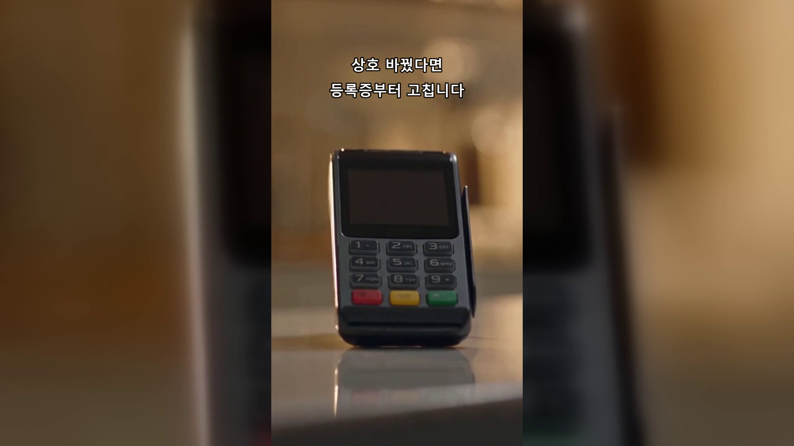
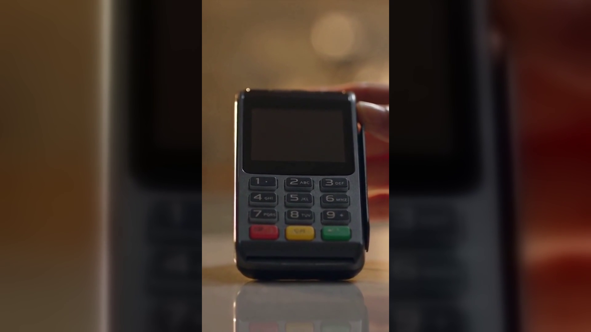

[제목]
가맹점 정보변경, 상호 바꾼 매장이 먼저 챙길 순서 6가지 — 네이버단말기 명의변경
[본문]
간판을 새로 달고 나서 영수증을 보니 옛 상호가 그대로 찍혀 있더라는 말씀을 종종 듣습니다. 상호를 바꾸는 일과 결제를 바꾸는 일이 따로 논다는 걸 그때 처음 아시게 되죠. 오늘은 무엇부터 손대야 하는지 순서대로 정리했습니다.
결론부터 말씀드리면, 가맹점 정보변경은 사업자등록증을 먼저 고치고, 그다음 밴사, 마지막에 정산 계좌 순서로 움직입니다.
- 사업자등록증부터 정정합니다
상호·대표자·주소가 바뀌면 세무서에 정정 신고를 하고 새 등록증을 받는 것이 첫 칸입니다. 뒤에 오는 모든 절차가 이 서류를 기준으로 진행되기 때문입니다.
- 무엇이 바뀌었는지 먼저 구분합니다
상호만 바뀐 경우와 대표자가 바뀐 경우는 무게가 다릅니다. 대표자 변경은 새로 여는 것에 가까워 요구되는 서류가 늘어나니 어느 쪽인지 먼저 정해 두세요.
- 밴사 쪽 가맹점 정보를 신청해서 바꿉니다
등록증만 고치면 카드 매출은 옛 정보 그대로 쌓입니다. 계약하신 밴사나 대리점에 변경 신청을 넣어야 가맹점 원장이 함께 바뀌고, 필요한 서류는 계약처마다 달라 직접 확인하셔야 정확합니다.
- 정산 계좌는 따로 신청해야 바뀝니다
상호가 바뀌었다고 입금 계좌가 따라 바뀌지는 않습니다. 통장 사본을 다시 내야 하는 경우가 많고, 신청이 반영되기 전 매출은 이전 계좌로 들어갑니다.
- 영수증에 찍히는 상호를 확인합니다
단말기에 저장된 상호는 사람이 바꿔 줘야 바뀝니다. 손님에게 나가는 영수증과 카드 전표에 옛 이름이 남아 있는지 한 번씩 확인해 보세요.
- 온라인에 흩어진 정보도 같이 정리합니다
지도와 예약·주문 채널, 배달 앱에 적힌 상호가 서로 다르면 손님이 헷갈립니다. 바꿀 곳을 적어 두고 하나씩 지워 나가면 빠지는 데가 없습니다.

위 3번과 5번은 단말기 설정까지 손봐야 끝납니다. 예약·주문을 매장 채널과 묶어 쓰신다면 상호가 걸린 자리가 여러 곳이라, 네이버단말기는 바꿀 목록을 미리 뽑아 두시는 편이 낫습니다. 정품 신제품 보증 · 수도권 직영 설치입니다.
정보 변경은 한 곳만 고치면 나머지가 어긋납니다. 등록증·밴사·계좌·영수증 네 칸을 적어 두고 하나씩 지워 나가 보세요. 헷갈리시면 편하게 물어보셔도 됩니다.
- 📞 전화상담 1544-7754
- 🌐 홈페이지 https://nwpos.co.kr

📷 인스타그램 팔로우 https://www.instagram.com/nurinetworkspos

▶️ 유튜브 구독 https://www.youtube.com/@nurinetworks
(2026년 8월 기준 · 변경 절차와 필요 서류는 계약처·업종에 따라 달라질 수 있어 계약하신 곳의 최신 안내를 확인해 주세요)
15초 3채널 공용 = 가맹점 정보변경 · 옛 상호가 찍힌 영수증
- 상단 2행 자막: 상호 바꿨다면 / 등록증부터 고칩니다
- 컷1 상황(옛 상호를 발견) → 컷2 행동(서류 순서대로 정리·문의) → 컷3 제품 클로즈업
- 컷3 앞 2초가 썸네일 = 결제단말기가 첫 화면에 보이게
[대표이미지]
- 블로그이미지1-매장(썸네일 겸용, 3채널 공용): 새로 정돈된 매장 카운터에서 백지 영수증 한 장을 들여다보는 20대 후반~30대 초반 사장님. 썸네일 텍스트 「상호 바꿨다면」 후반 합성
- 블로그이미지2-제품: 정돈된 카운터 위에 놓인 네이버단말기 제품 컷 (화면 완전 공백)